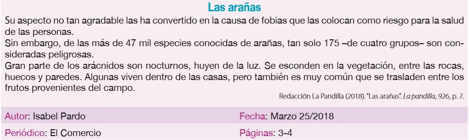

Reflexiono para avanzar
Alumno:
Reflexiono para avanzar
Alumno:
1. Lee y parafrasea las siguientes ideas.
| Texto original: El barrio Las Peñas fue destruido en dos ocasiones por los incendios que asolaron Guayaquil en diferentes épocas. |
| Parafraseo: |
| Texto original: Una manta isotérmica, también denominada manta de emergencia, es un cobertor muy fino hecho de plástico plateado. Se usa para evitar que la temperatura corporal de una persona baje o suba en exceso en ambientes extremos. |
| Parafraseo: |
2. Lee la siguiente noticia, escribe un resumen parafraseando las ideas principales y coloca la referencia correspondiente.

Resumen “Las arañas”
Resumen “Las arañas”